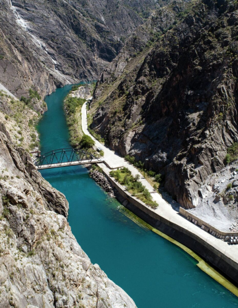

ABOUT NARYN
Naryn region is located in focal parts of the country on the slopes of the Inner Tien Shan. The Naryn region is the highest region of the republic and borders on production with the Issyk-Kul region, in the north - with the Chui region, in the west - with the Jalal-Abad and Osh regions, and in the south - with the China.